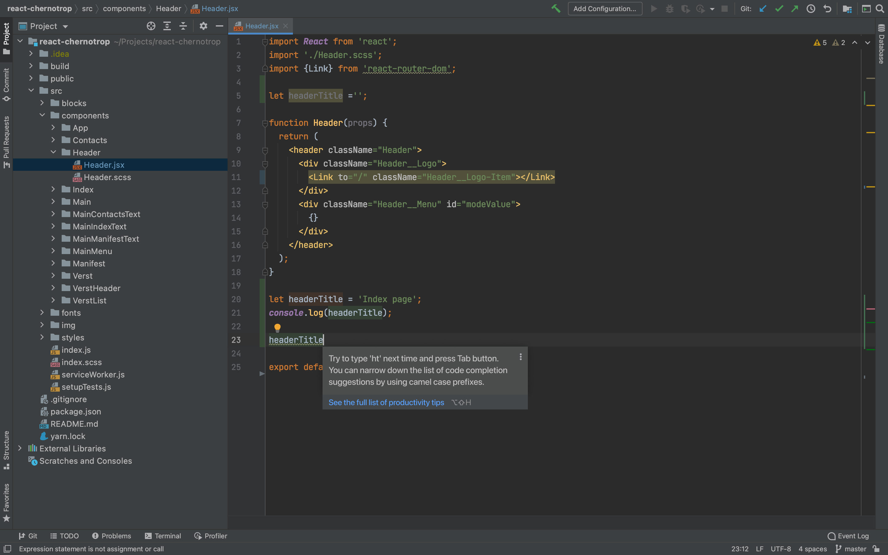
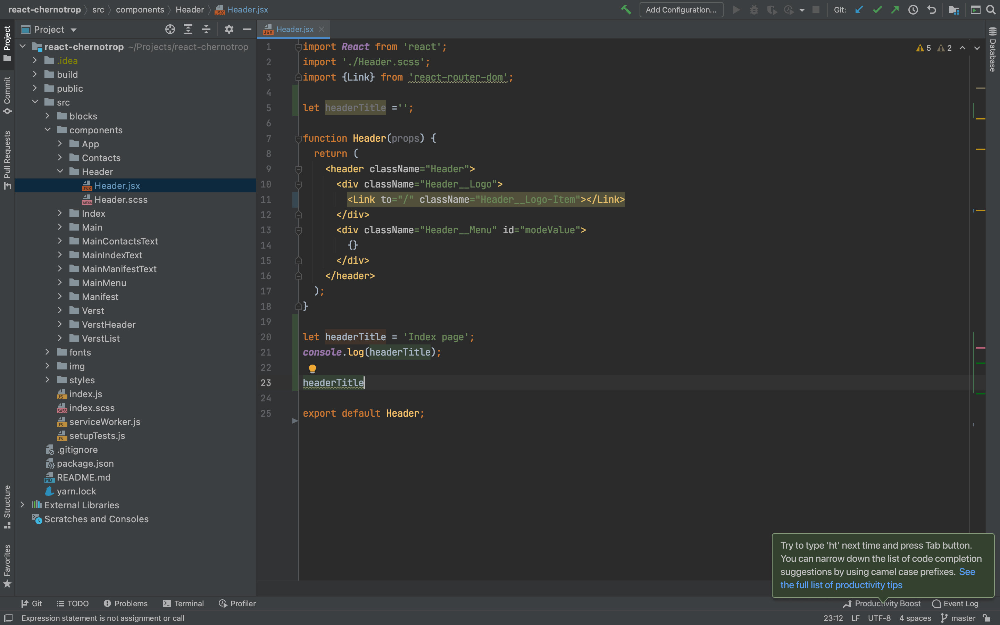
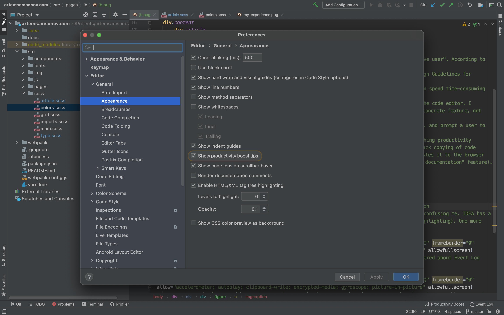
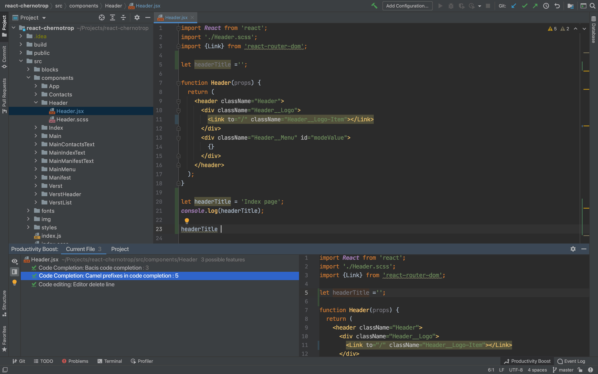
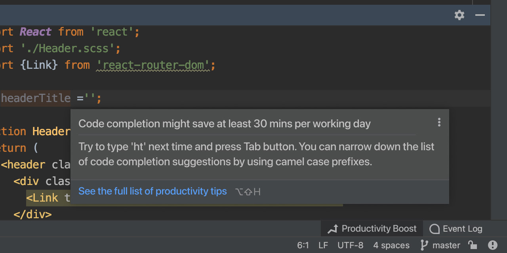
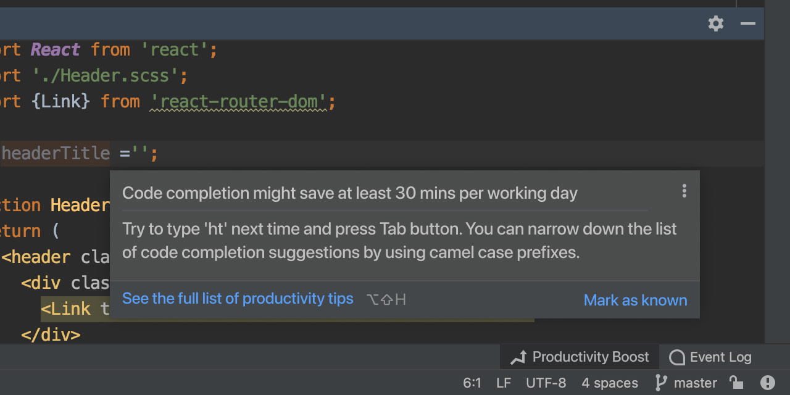
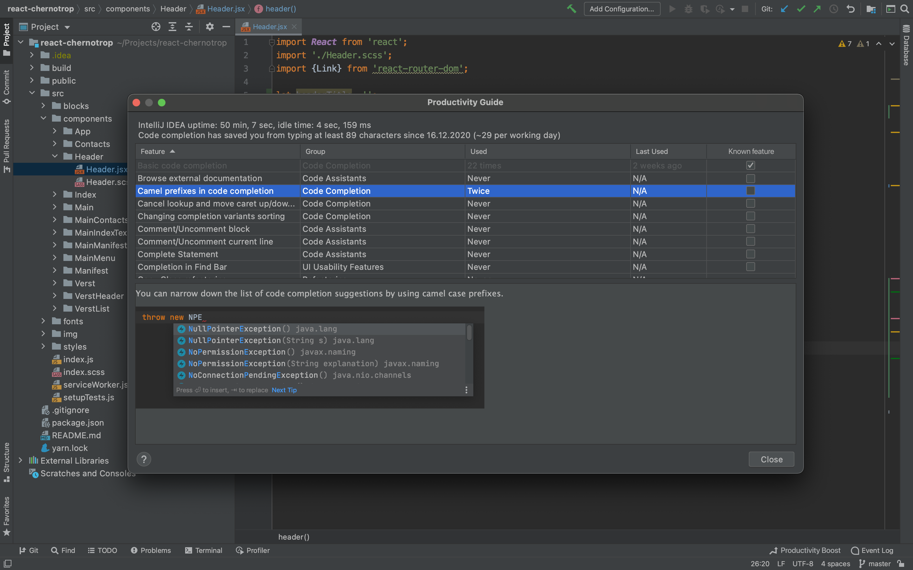
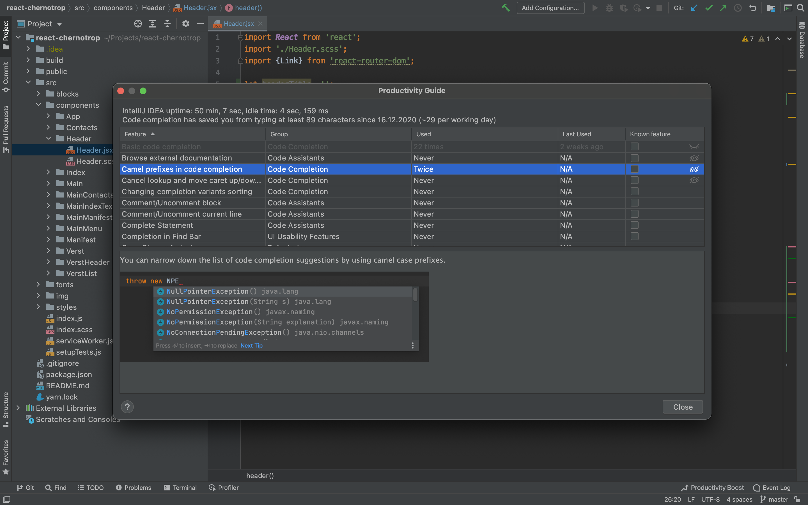

<!DOCTYPE html>
<html>
  <head>
    <meta charset="utf-8"/>
    <meta name="viewport" content="width=device-width, initial-scale=1.0"/>
    <meta property="og:type" content="article"/>
    <meta property="og:title" content="Design exercise: Productivity Guide level up"/>
    <meta property="og:description" content="by Artem Samsonov"/>
    <meta property="og:image" content="http://artemsamsonov.com/img/jb-og.jpg"/>
    <link href="https://fonts.googleapis.com/icon?family=Material+Icons" rel="stylesheet"/>
    <link rel="stylesheet"/><!-- Yandex.Metrika counter --> <script type="text/javascript" > (function(m,e,t,r,i,k,a){m[i]=m[i]||function(){(m[i].a=m[i].a||[]).push(arguments)}; m[i].l=1*new Date();k=e.createElement(t),a=e.getElementsByTagName(t)[0],k.async=1,k.src=r,a.parentNode.insertBefore(k,a)}) (window, document, "script", "https://mc.yandex.ru/metrika/tag.js", "ym"); ym(57652780, "init", { clickmap:true, trackLinks:true, accurateTrackBounce:true, webvisor:true, trackHash:true }); </script> <noscript><div></div></noscript> <!-- /Yandex.Metrika counter -->
    <title>Design exercise: Productivity Guide level up</title>
  <link href="./css/style.bundle.css" rel="stylesheet"></head>
</html>
<body class="body_light">
  <header class="header header_light">
    <div class="header__logo"><a class="header__logo-link" href="index.html">Артём Самсонов</a></div>
    <!--div.header__menu
    a.header__menu-elem(href="http://artemsamsonov.com/skills") Навыки
    a.header__menu-elem(href="http://artemsamsonov.com/my-experience") Работы
    a.header__menu-elem(href="http://artemsamsonov.com/#contacts") Контакты
    -->
  </header>
  <div class="content">
    <div class="article">
      <div class="article__text">
        <h1>Productivity Guide level up</h1>
        <p><a href="https://www.figma.com/file/kpT8Qve3Dmq7KySXzt6RIq/Jet-Brains?node-id=0%3A1">Figma mockup</a><br><a href="https://www.figma.com/proto/kpT8Qve3Dmq7KySXzt6RIq/Jet-Brains?node-id=99%3A47&amp;viewport=313%2C46%2C0.125&amp;scaling=scale-down">Figma clickable prototype</a></p>
        <h2>Which way I decided to follow</h2>
        <p>When I read the design exercise, I immediately thought about the "Paradox of the active user". According to the article "<a href="https://www.nngroup.com/articles/complex-application-design/">8 Design Guidelines for Complex Applications</a>" by Nielsen Norman Group, users are more motivated to begin their tasks than spend time-consuming tutorials, documentation, or other types of help or setup content.</p>
        <p>Based on this research, I tried to embed the "Productivity Guide" features to the code editor. I assumed that we can define most of the cases connected to the productivity losses and prompt a user to use a concrete feature, not the long list of different features.</p>
        <p>For example, we can track multiple typing of the same variables, functions, etc. and prompt a user to use a "Basic code completion" or "Camel prefixes in code completion" features.</p>
        <p class="article__text_secondary">"Code completion" looks like the easiest category to catch productivity losses. I hope that we can design a lot of rules for other categories. For example, we might track copying of code elements. If user copies element but doesn't paste it inside the IDEA, we can assume that he pastes it to the browser to search some documentation. Then we suggest trying to press Shift+F1 hotkey ("Browse external documentation" feature).</p>
        <h2>How we're gonna show it in the interface</h2>
        <p>Firstly I decided to use the same hint as Quick Fixes' component:</p>
        <figure class="article__image"><a href="../../img/jb-01.jpg" target="blank">
            <imgcaption class="article__image-caption">Click to the img to see full size version</imgcaption></a></figure>
        <p>It would be a perspective hypothesis, but the importunity of this decision was confusing me. IDEA has a lot of close to the code features (for example, quick fixes hint's, intention bulbs, colour highlighting). One more tip near the code can annoy users:</p>
        <figure class="article__image">
          <iframe width="100%" height="380" src="https://www.youtube.com/embed/jNE6T4oaRNE" allow="accelerometer; autoplay; clipboard-write; encrypted-media; gyroscope; picture-in-picture" allowfullscreen></iframe>
        </figure>
        <p>So, I'd started to search for another place to show the tips. Then I remembered about "Event Log" notifications and tried to place "Productivity Guide" to the IDE's footer:</p>
        <figure class="article__image"><a href="../../img/jb-02.jpg" target="blank"></a></figure>
        <figure class="article__image">
          <iframe width="100%" height="380" src="https://www.youtube.com/embed/E60TJW7wdTo" allow="accelerometer; autoplay; clipboard-write; encrypted-media; gyroscope; picture-in-picture" allowfullscreen></iframe>
        </figure>
        <p>As for me, this way is a good compromise between saving the context and unobtrusiveness. We prompt the user concrete way to boost his productivity as quickly as possible and suggest to learn more features.</p>
        <p>Of course, the user can disable this hints in the "Settings":</p>
        <figure class="article__image"><a href="../../img/jb-03.jpg" target="blank"></a></figure>
        <p>Also, I suggest adding "Productivity boost" panel to analyze possible ways to increase user's productivity. I made this interface based on "Problems" panel:</p>
        <figure class="article__image"><a href="../../img/jb-04.jpg" target="blank"></a></figure>
        <p>Hints in the right panel are available too:</p>
        <figure class="article__image">
          <iframe width="640" height="380" src="https://www.youtube.com/embed/bwRMHduwszQ" allow="accelerometer; autoplay; clipboard-write; encrypted-media; gyroscope; picture-in-picture" allowfullscreen></iframe>
        </figure>
        <h2>How we can level up this solution</h2>
        <p>Time is the best resource for the modern era and "Productivity Guide" should have info about saving it. We can make this metric predictable and tell users about lost savings. For example, we can analyze a document and show the places where user can save time if he uses our productivity features:</p>
        <figure class="article__image"><a href="../../img/jb-05.jpg" target="blank"></a></figure>
        <p>Also, we can add "Mark as read" button for completing known issues...</p>
        <figure class="article__image"><a href="../../img/jb-06.jpg" target="blank"></a></figure>
        <p>... and mark features as known in the "Productivity Guide" modal:</p>
        <figure class="article__image"><a href="../../img/jb-07.jpg" target="blank"></a></figure>
        <p>If user marks a feature as a known, we don't show tips in the footer and "Productivity Boost" panel.</p>
        <h2>How we can check the decision</h2>
        <p>Firstly I thought we can track the count of "Community Boost" panel's and "Community Guide" modal's openings before release and after. Also, we can track the growth of features marking as known.</p>
        <p class="article__text_secondary">In this case, we should add the "Hide" option. Otherwise, users can mark unnecessary features as known.</p>
        <figure class="article__image"><a href="../../img/jb-08.jpg" target="blank"></a></figure>
        <p>But I think these aren't the main goals for us. Why are you developing "Community Guide"? As for me, you want to improve work efficiency. If we decide to analyze spent time for every case, we can get we difference between average spending time before and after using the feature.</p>
        <p class="article__text_secondary">Let's take the "Editor delete line" feature. We can compare the average time what users spent before using Cmd+Del and after.</p>
        <p>I understand, that we can't track all of the features. For example, I can't image how we can measure "Directory Diff" efficiency (comparison "didn't use/using now" is unreliable). In such cases, we can use user testing.</p>
        <h2>A couple of things which confuse me in this decision</h2>
        <p>I don't know your analytics possibilities. Maybe some metrics look like overengineering or you can't analyze all of the user data into the big projects. Anyway, I am sure that we shouldn't only improve the attendance of the "Community Guide" modal, we should try to increase user productivity in general. "Community Guide" modal is just an instrument for it.</p>
        <p>All of the designed cases might be worked out in-depth. I didn't pay attention for keyboard navigation or narrow cases. If you want to look at the some of it in details or discuss my decisions, lemme know.</p>
        <p>Thanks for attention!</p>
      </div>
    </div>
  </div>
<script type="text/javascript" src="./js/bundle.js"></script></body>